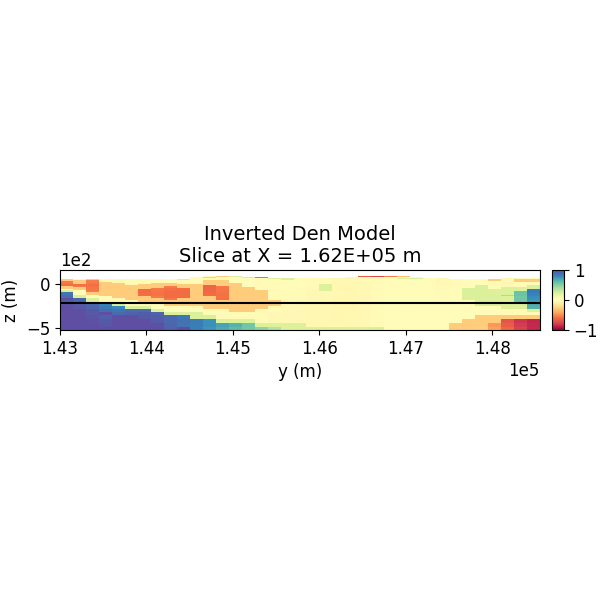
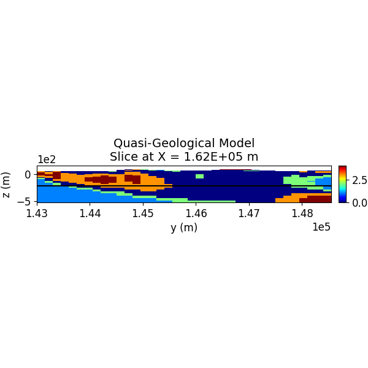
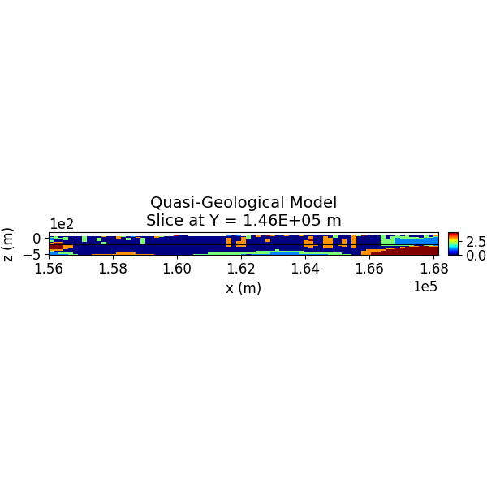
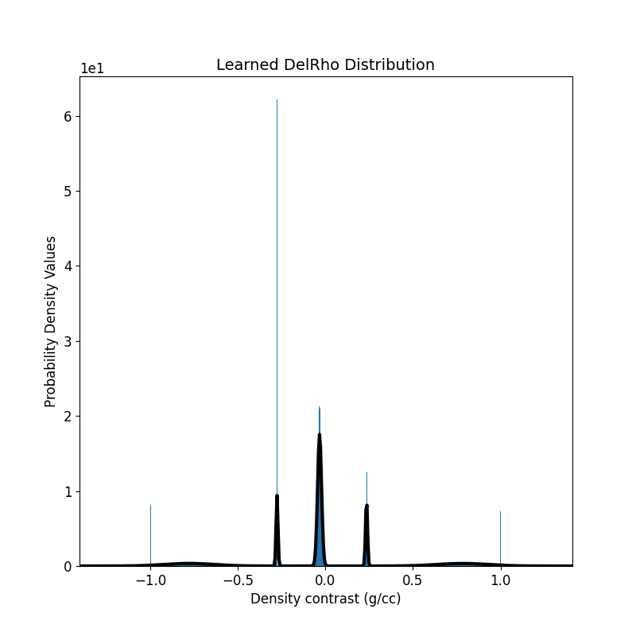

Note
Go to the end to download the full example code
Inversion of Full Tensor Gravity Gradiometry Data¶
This example illustrates the inversion of sub-surface density models from Full-Tensor Gravity Gradiometry (FTG-G) data, measured over the Irish Midlands, using Petrophysically and Geologically guided Inversion (PGI). The key steps include:
Loading necessary modules and data
Generating a mesh
Initializing the Gaussian Mixture Model
Tuning hyper-parameters
Visualizing the results
- The process is based on the PGI method introduced by Astic and Oldenburg (2019), and it extends the original example
notebook from SimPEG’s documentation (see SimPEG docs for more information).
import os
import shutil
from dotenv import dotenv_values
import SimPEG.potential_fields as pf
# Import the SimPEG functions
import discretize as ds
import matplotlib as mpl
import matplotlib.pyplot as plt
# Import the general modules
import numpy as np
import pandas as pd
from SimPEG import (maps, data, utils, inverse_problem, inversion, optimization, regularization, data_misfit, directives)
from SimPEG.potential_fields import gravity as grav
# Import the discretize module
from discretize.utils import active_from_xyz
# Import SimpegHelper for plotting and resampling data
from vector_geology import SimpegHelper as SH
# Plot beautification
formatter = mpl.ticker.ScalarFormatter(useMathText=True)
formatter.set_scientific(True)
formatter.set_powerlimits((0, 0))
mpl.rc("axes", titlesize=14, labelsize=12)
mpl.rc("xtick", labelsize=12)
mpl.rc("ytick", labelsize=12)
Step 1: Create Directories for Storing Model Iterations and Outputs¶
PGI is an iterative process, and it’s useful to save the model at every iteration. This helps in preventing overfitting and in adjusting the stopping criteria based on the model iterations.
name = "Ireland_FTG"
path_to_mod_iterations = f"./{name}/Model Iterations"
path_to_output = f"./{name}/Output"
if os.path.exists(path_to_mod_iterations):
shutil.rmtree(path_to_mod_iterations)
os.makedirs(path_to_mod_iterations)
if os.path.exists(path_to_output):
shutil.rmtree(path_to_output)
os.makedirs(path_to_output)
Step 2: Load the FTG-G Data¶
Full Tensor Gradiometry data, a 2-Tensor, contains five independent components due to its symmetric and traceless nature. These components are used for the inversion.
config = dotenv_values()
file_path = config.get("PATH_TO_GRADIOMETRY")
FTG_Data = pd.read_csv(file_path, delimiter=",").to_numpy()
Step 3: Resample Data onto a Regular Grid¶
Resampling the data onto a regular grid aids in mesh generation and visualization. The SimpegHelper.pf_rs() function resamples potential field data onto a new regular grid.
inc = 150 # New sampling interval (ground units)
grav_new, nx_new, ny_new = SH.pf_rs(
FTG_Data,
inc,
bounds=[156000, 168000, 143000, 148500]
)
# NOTE: This step is necessary for real data since the convention followed by
# the SimPEG forward operator is the opposite of the general convention
grav_vec = grav_new[:, 3:] * np.array([-1.0, -1.0, 1.0, 1.0, -1.0])[None, :] # Adjusting sign convention
inv_topo = grav_new[:, [0, 1, 2]] # Extracting topography
Step 4: Visualize the Data¶
The SimpegHelper.plot_2D_data() function is used to visualize the datasets with matplotlib.
SH.plot_2D_data(
data=np.c_[grav_new[:, [0, 1, 2]], grav_vec[:, 0]],
clim=[np.nanmin(grav_vec[:, 0]), np.nanmax(grav_vec[:, 0])],
cmap="jet",
which_data="FTG",
comp="xx",
path_to_output=path_to_output,
name=name
)
SH.plot_2D_data(
data=np.c_[grav_new[:, [0, 1, 2]], inv_topo[:, -1]],
clim=[np.nanmin(inv_topo[:, -1]), np.nanmax(inv_topo[:, -1])],
cmap="terrain",
which_data="Topo",
comp="xx",
path_to_output=path_to_output,
name=name
)

Step 5: Create a TensorMesh Object for Inversion¶
A 3D TensorMesh is created using the discretize.TensorMesh utility to invert the gravity gradiometry data. The mesh is designed to have a constant cell size in the core region and expanding/contracting cells in the padding region.
Where $r$ is a multiplicative factor (<1 for contracting, >1 for expanding cells). x and y increments can be altered as well, but we choose not to, as the data are not spatially clustered (i.e., the entire region is an area of interest).
dx, dy, dz = inc, inc, 10 # Cell sizes
nz_core, nz_pad = 10, 18 # Number of cells in core and padding
fact = 1.1 # Factor for expanding/contracting cells
inv_hx = dx * np.ones(nx_new)
inv_hy = dy * np.ones(ny_new)
inv_hz = [(dz, nz_pad, -fact), (dz, nz_core), (dz, nz_pad, fact)]
# Create the inverse tensor mesh
inv_mesh = ds.TensorMesh(
h=[inv_hx, inv_hy, inv_hz],
x0=[np.min(inv_topo[:, 0]), np.min(inv_topo[:, 1]), "C"])
# Drape the topography over the mesh
actv = active_from_xyz(inv_mesh, inv_topo)
ndv = np.nan
actvMap = maps.InjectActiveCells(inv_mesh, actv, ndv)
nactv = int(actv.sum())
# Print mesh details
print(inv_mesh)
TensorMesh: 137,862 cells
MESH EXTENT CELL WIDTH FACTOR
dir nC min max min max max
--- --- --------------------------- ------------------ ------
x 81 156,000.00 168,150.00 150.00 150.00 1.00
y 37 143,000.00 148,550.00 150.00 150.00 1.00
z 46 -551.59 551.59 10.00 55.60 1.10
Step 6: Visualize the Mesh¶
A slice of the Tensor Mesh object is visualized using the discretize.TensorMesh.plot_slice() utility.
Create a background model.
bg = np.ones(nactv)
mod = actvMap * bg
# Plot the mesh slice.
fig = plt.figure(figsize=(6, 6))
ax = fig.add_axes([0.1, 0.1, 0.8, 0.8])
cplot = inv_mesh.plot_slice(mod, grid=True, ax=ax, normal="Y", ind=22)
ax.set_title('Tensor Mesh Slice')
ax.set_xlabel('x (m)')
ax.set_ylabel('z (m)')
ax.set_xlim([158000, 159000])
ax.set_ylim([-500, 100])
ax.ticklabel_format(axis="both")
ax.set_aspect('equal')
plt.savefig(
path_to_output + "/" + name + "_TreeMeshSlice.pdf",
bbox_inches="tight"
)
plt.show()
Step 7: Set up the Gravity Inverse Problem¶
The gravity inverse problem is set up using SimPEG’s pf.gravity module to generate a forward model based on the mesh and receiver locations.
Create wires for the density model
wires = maps.Wires(("density", nactv))
# Create a density map
density_map = actvMap * wires.density
# Create an identity map
identity_map = maps.IdentityMap(nP=nactv)
# Components of the data used as input
gravity_components = ["gxx", "gyy", "gxz", "gyz", "gxy"]
# Receiver locations (25 meters above the topography)
gravity_receiver_locations = inv_topo + 120.
# Create a gravity receiver list
gravity_receivers = pf.gravity.receivers.Point(
locations=gravity_receiver_locations,
components=gravity_components
)
gravity_receiver_list = [gravity_receivers]
# Create a gravity source field
gravity_source_field = pf.gravity.sources.SourceField(
receiver_list=gravity_receiver_list
)
# Define the gravity survey
gravity_survey = pf.gravity.survey.Survey(gravity_source_field)
# Set up the gravity simulation problem
gravity_problem = grav.simulation.Simulation3DIntegral(
inv_mesh,
survey=gravity_survey,
rhoMap=wires.density,
ind_active=actv
)
# Create a gravity data object, with the relative errors and a standard noise floor
gravity_data = data.Data(
survey=gravity_survey,
dobs=grav_vec.flatten(),
noise_floor=5,
relative_error=0.1
)
# Define the misfits associated with the gravity data
gravity_misfit = data_misfit.L2DataMisfit(
data=gravity_data,
simulation=gravity_problem
)
Step 8: Setting up the Gaussian Mixture Model (GMM) Prior¶
In PGI, the petrophysical data is used as a constraint in the form of a Gaussian Mixture Model (GMM).
A GMM is a multimodal probabilistic distribution which is just a weighted sum of multiple gaussian distributions. Given the number of rock units (\(n\)),
the petrophysical distribution can be displayed as an $n$-modal GMM. If you have no petrophysical information available, you can initialize the GMM as below.
If you do have a petrophysical dataset, you can fit the GMM to said dataset using the gmmref.fit() method.
Number of rock units and number of physical properties
num_rock_units = 5
num_physical_props = 1
# Create a weighted Gaussian mixture model with specified parameters
gmmref = utils.WeightedGaussianMixture(
n_components=num_rock_units,
mesh=inv_mesh,
actv=actv,
covariance_type="full",
)
# Set the background density
background_density = 0.0
# Initialize the GMM fit with random samples, mesh size,
# and number of physical properties
gmmref.fit(np.random.randn(nactv, num_physical_props))
# Set the mean values of physical property contrasts for each rock unit
# One value (density) for each rock unit
gmmref.means_ = np.c_[
[-0.4],
[-0.2],
[0.0],
[0.2],
[0.4],
].T
# Set the original variance for density
density_variance = 8e-5
# Set the covariances of physical properties for each rock unit
# NOTE: Since we don't have petrophysical information for this example,
# we keep the covariances # same for every unit. The GMM will update
# itself during the inversion.
gmmref.covariances_ = np.array(
[
[[density_variance]],
[[density_variance]],
[[density_variance]],
[[density_variance]],
[[density_variance]]
]
)
# Compute the precision (inverse covariance) of each cluster
gmmref.compute_clusters_precisions()
# Set the weights for each rock unit
# NOTE: This determines the size of each peak of the n-modal GMM
gmmref.weights_ = np.ones((nactv, 1)) * np.c_[0.125, 0.125, 0.5, 0.125, 0.125]
Plot the 1D-GMM¶
The initial density distribution is visualized.
fig = plt.figure(figsize=(6, 6))
ax = gmmref.plot_pdf(flag2d=False, plotting_precision=1000, padding=0.2)
ax[0].set_xlabel(r"Density Contrast (g/cc)")
ax[0].set_ylabel(r"Probability Density Values")
ax[0].get_legend().remove()
ax[0].set_title(r"Initial DelRho Distribution")
ax[0].ticklabel_format(axis="both", style="scientific", scilimits=(0, 0))
ax[0].set_aspect(1 / 20)
plt.savefig(
path_to_output + "/" + name + "_Init_GMM.pdf",
bbox_inches="tight"
)
plt.show()
Step 9: Setting the Hyper-parameters and the Sensitivity Weights¶
Every PGI is a set of three Maximum-A-Posteriori (MAP) problems, being solved iteratively. The solver tries to minimize the L2 error of an objective function containing both the FTG Data and the petrophysical GMM. In this section we tune the necessary hyper-parameters, as well as initialise the necessary weights for every voxel (as the contribution of every voxel is dependent on its depth from the surface). The regularization smallness (\(\alpha_s\)) and smoothness (\(\alpha_i,\ i = x, y, z\)) are initialised here. Please check here for the physical meaning of these parameters and the fundamentals of a Tikhonov regularized inversion.
NOTE: The smoothness parameters (alpha_i) are static and hence need to be fine-tuned through trial and error.
initial_model = np.r_[background_density * np.ones(actvMap.nP)]
Sensitivity weighting Compute the sensitivity weights for each cell based on the gravity problem’s sensitivity matrix (G) This is done by computing the square root of the sum of the squared elements of G for each cell, and then normalizing by the cell volumes and the maximum weight value.
sensitivity_weights_gravity = np.sum(gravity_problem.G ** 2.0, axis=0) ** 0.5 / (inv_mesh.cell_volumes[actv])
sensitivity_weights_gravity = sensitivity_weights_gravity / np.nanmax(sensitivity_weights_gravity)
# Regularization multipliers
smallness_multiplier = 1e-4
smoothness_x_multiplier = 4
smoothness_y_multiplier = 4
smoothness_z_multiplier = 0.25
# Create joint PGI regularization with smoothness
regularization_term = regularization.PGI(
gmmref=gmmref,
mesh=inv_mesh,
wiresmap=wires,
maplist=[identity_map],
active_cells=actv,
alpha_pgi=smallness_multiplier,
alpha_x=smoothness_x_multiplier,
alpha_y=smoothness_y_multiplier,
alpha_z=smoothness_z_multiplier,
# The second derivative smoothnesses are kept to be zero, since we
# don't want to include second derivatives in the objective function
alpha_xx=0.0,
alpha_yy=0.0,
alpha_zz=0.0,
weights_list=[sensitivity_weights_gravity]
)
Step 10: Initialize the Directives¶
Directives are set, including instructions on the bounds, update factors, and other hyperparameters for the inversion solver.
Estimate smoothness multipliers
alphas_directive = directives.AlphasSmoothEstimate_ByEig(verbose=True)
# Initialize beta and beta/alpha_s schedule
beta_directive = directives.BetaEstimate_ByEig(beta0_ratio=1e-2)
beta_schedule = directives.PGI_BetaAlphaSchedule(
coolingFactor=16.0,
tolerance=0.2,
progress=0.2,
verbose=True,
)
# Define target misfits for geophysical and petrophysical data
target_misfits = directives.MultiTargetMisfits(verbose=True)
# Add reference model once stable
mref_in_smooth = directives.PGI_AddMrefInSmooth(
wait_till_stable=True,
verbose=True
)
# Update smallness parameters, keeping GMM fixed (L2 Approx of PGI)
update_smallness_directive = directives.PGI_UpdateParameters(
update_gmm=True,
kappa=0,
nu=0.5,
zeta=0
)
# Update preconditioner
update_preconditioner = directives.UpdatePreconditioner()
# Save iteration results
save_iteration_directive = directives.SaveOutputEveryIteration(
name=name,
directory=path_to_output
)
# Save model iterations
save_model_directive = directives.SaveModelEveryIteration(
name=name,
directory=path_to_mod_iterations
)
# Optimization options for the inversion
lower_bound = np.r_[-1.0 * np.ones(actvMap.nP)]
upper_bound = np.r_[1.0 * np.ones(actvMap.nP)]
optimizer = optimization.ProjectedGNCG(
maxIter=20,
lower=lower_bound,
upper=upper_bound,
maxIterLS=20,
maxIterCG=100,
tolCG=1e-4,
)
# Inverse problem setup
inverse_prob = inverse_problem.BaseInvProblem(gravity_misfit, regularization_term, optimizer)
inversion_algo = inversion.BaseInversion(
inverse_prob,
directiveList=[
alphas_directive,
beta_directive,
update_smallness_directive,
target_misfits,
beta_schedule,
mref_in_smooth,
update_preconditioner,
save_iteration_directive,
save_model_directive
],
)
Step 11: Run the Inversion!¶
The inversion is executed using the initialized settings.
inverted_model = inversion_algo.run(initial_model)
SimPEG.InvProblem will set Regularization.reference_model to m0.
SimPEG.InvProblem will set Regularization.reference_model to m0.
SimPEG.InvProblem is setting bfgsH0 to the inverse of the eval2Deriv.
***Done using the default solver SolverLU and no solver_opts.***
Alpha scales: [450539987.2319715, 0.0, 450331911.77148, 0.0, 252496.71182171933, 0.0]
<class 'SimPEG.regularization.pgi.PGIsmallness'>
SimPEG.SaveOutputEveryIteration will save your inversion progress as: '###-Ireland_FTG-2024-06-12-11-31.txt'
SimPEG.SaveModelEveryIteration will save your models as: './Ireland_FTG/Model Iterations/###-Ireland_FTG-2024-06-12-11-31.npy'
model has any nan: 0
=============================== Projected GNCG ===============================
# beta phi_d phi_m f |proj(x-g)-x| LS Comment
-----------------------------------------------------------------------------
x0 has any nan: 0
0 5.16e-11 1.76e+04 0.00e+00 1.76e+04 2.82e+02 0
geophys. misfits: 7371.6 (target 7492.5 [True]) | smallness misfit: 53906.0 (target: 44885.0 [False])
Beta cooling evaluation: progress: [7371.6]; minimum progress targets: [14114.6]
Warming alpha_pgi to favor clustering: 0.00010163944435366406
mref changed in 46847 places
1 5.16e-11 7.37e+03 3.14e+12 7.53e+03 2.40e+02 0
geophys. misfits: 2838.5 (target 7492.5 [True]) | smallness misfit: 56935.5 (target: 44885.0 [False])
Beta cooling evaluation: progress: [2838.5]; minimum progress targets: [8991.]
Warming alpha_pgi to favor clustering: 0.000268289722030569
mref changed in 24087 places
2 5.16e-11 2.84e+03 3.03e+12 2.99e+03 1.75e+02 0
geophys. misfits: 1905.4 (target 7492.5 [True]) | smallness misfit: 59195.7 (target: 44885.0 [False])
Beta cooling evaluation: progress: [1905.4]; minimum progress targets: [8991.]
Warming alpha_pgi to favor clustering: 0.0010549908997251215
mref changed in 13874 places
3 5.16e-11 1.91e+03 3.11e+12 2.07e+03 1.25e+02 0 Skip BFGS
geophys. misfits: 1372.4 (target 7492.5 [True]) | smallness misfit: 60354.0 (target: 44885.0 [False])
Beta cooling evaluation: progress: [1372.4]; minimum progress targets: [8991.]
Warming alpha_pgi to favor clustering: 0.005759570489988677
mref changed in 8966 places
4 5.16e-11 1.37e+03 3.11e+12 1.53e+03 7.93e+01 0
geophys. misfits: 1272.3 (target 7492.5 [True]) | smallness misfit: 60282.9 (target: 44885.0 [False])
Beta cooling evaluation: progress: [1272.3]; minimum progress targets: [8991.]
Warming alpha_pgi to favor clustering: 0.03391664568403566
mref changed in 911 places
5 5.16e-11 1.27e+03 3.10e+12 1.43e+03 7.56e+01 3 Skip BFGS
geophys. misfits: 1267.5 (target 7492.5 [True]) | smallness misfit: 60283.2 (target: 44885.0 [False])
Beta cooling evaluation: progress: [1267.5]; minimum progress targets: [8991.]
Warming alpha_pgi to favor clustering: 0.20048874090982202
mref changed in 505 places
6 5.16e-11 1.27e+03 3.09e+12 1.43e+03 7.91e+01 4 Skip BFGS
geophys. misfits: 1262.7 (target 7492.5 [True]) | smallness misfit: 60177.5 (target: 44885.0 [False])
Beta cooling evaluation: progress: [1262.7]; minimum progress targets: [8991.]
Warming alpha_pgi to favor clustering: 1.1896358760296895
mref changed in 770 places
7 5.16e-11 1.26e+03 3.09e+12 1.42e+03 8.12e+01 3 Skip BFGS
geophys. misfits: 1256.3 (target 7492.5 [True]) | smallness misfit: 60322.2 (target: 44885.0 [False])
Beta cooling evaluation: progress: [1256.3]; minimum progress targets: [8991.]
Warming alpha_pgi to favor clustering: 7.095110291995982
mref changed in 1257 places
8 5.16e-11 1.26e+03 3.11e+12 1.42e+03 7.58e+01 2 Skip BFGS
geophys. misfits: 1229.7 (target 7492.5 [True]) | smallness misfit: 60662.4 (target: 44885.0 [False])
Beta cooling evaluation: progress: [1229.7]; minimum progress targets: [8991.]
Warming alpha_pgi to favor clustering: 43.22879746069664
mref changed in 838 places
9 5.16e-11 1.23e+03 3.23e+12 1.40e+03 5.95e+01 2
geophys. misfits: 1228.5 (target 7492.5 [True]) | smallness misfit: 61694.0 (target: 44885.0 [False])
Beta cooling evaluation: progress: [1228.5]; minimum progress targets: [8991.]
Warming alpha_pgi to favor clustering: 263.6454125573714
mref changed in 240 places
10 5.16e-11 1.23e+03 4.05e+12 1.44e+03 4.98e+01 2 Skip BFGS
geophys. misfits: 1221.9 (target 7492.5 [True]) | smallness misfit: 71285.7 (target: 44885.0 [False])
Beta cooling evaluation: progress: [1221.9]; minimum progress targets: [8991.]
Warming alpha_pgi to favor clustering: 1616.6169674812083
mref changed in 256 places
11 5.16e-11 1.22e+03 1.05e+13 1.77e+03 6.99e+01 0
geophys. misfits: 1250.7 (target 7492.5 [True]) | smallness misfit: 60283.1 (target: 44885.0 [False])
Beta cooling evaluation: progress: [1250.7]; minimum progress targets: [8991.]
Warming alpha_pgi to favor clustering: 9684.855466686517
mref changed in 68 places
12 5.16e-11 1.25e+03 4.23e+13 3.43e+03 2.30e+02 0
geophys. misfits: 1487.9 (target 7492.5 [True]) | smallness misfit: 33779.6 (target: 44885.0 [True])
All targets have been reached
Beta cooling evaluation: progress: [1487.9]; minimum progress targets: [8991.]
Warming alpha_pgi to favor clustering: 48768.36025676174
mref changed in 75 places
------------------------- STOP! -------------------------
1 : |fc-fOld| = 0.0000e+00 <= tolF*(1+|f0|) = 1.7644e+03
0 : |xc-x_last| = 1.1970e+01 <= tolX*(1+|x0|) = 1.0000e-01
0 : |proj(x-g)-x| = 2.2712e+02 <= tolG = 1.0000e-01
0 : |proj(x-g)-x| = 2.2712e+02 <= 1e3*eps = 1.0000e-02
0 : maxIter = 20 <= iter = 13
------------------------- DONE! -------------------------
Step 12: Visualize the 3D Model¶
The inverted 3D model is visualized using slices in different orientations.
set = 1
save_plots = True
# Indices of the depth sections
ind_plot_x = int(len(inv_mesh.cell_centers_x) / 6) + 25
ind_plot_y = int(len(inv_mesh.cell_centers_y) / 2)
ind_plot_z = int(len(inv_mesh.cell_centers_z) / 2) - 15
ind_plot = [ind_plot_x, ind_plot_y, ind_plot_z]
# Extract the results
inverted_density_model = density_map * inverted_model
quasi_geology_model = actvMap * regularization_term.objfcts[0].compute_quasi_geology_model()
# Plot Density Contrast Model (Z)
normal = "Z"
model_to_plot = inverted_density_model
SH.plot_model_slice(
mesh=inv_mesh,
ind_active=actv,
model=model_to_plot,
normal= normal,
ind_plot_arr=ind_plot,
clim=[-1.0, 1.0],
set=set, sec_loc=True,
gdlines=True,
which_prop="Den",
cmap="Spectral",
save_plt=save_plots,
path_to_output=path_to_output,
name=name
)
# Plot Inverted Model Slices (Y)
normal = "X"
model_to_plot = inverted_density_model
SH.plot_model_slice(inv_mesh, actv, model_to_plot, normal, ind_plot, [-1.0, 1.0], set, sec_loc=True, gdlines=True, which_prop="Den", cmap="Spectral", save_plt=save_plots, path_to_output=path_to_output, name=name)
# Plot Inverted Model Slices (X)
normal = "Y"
model_to_plot = inverted_density_model
SH.plot_model_slice(inv_mesh, actv, model_to_plot, normal, ind_plot, [-1.0, 1.0], set, sec_loc=True, gdlines=True, which_prop="Den", cmap="Spectral", save_plt=save_plots, path_to_output=path_to_output, name=name)
- 
Step 13: Visualize the Quasi-Geological Model¶
The quasi-geological model (as given by Li et al., 2019) is visualized, showing different rock units classified by the GMM.
Plot Density Contrast Model (Z)
normal = "Z"
model_to_plot = quasi_geology_model
SH.plot_model_slice(inv_mesh, actv, model_to_plot, normal, ind_plot, [0, 4], set, sec_loc=True, gdlines=True, which_prop="QGM", cmap="jet", save_plt=save_plots, path_to_output=path_to_output, name=name)
# Plot Inverted Model Slices (Y)
normal = "X"
model_to_plot = quasi_geology_model
SH.plot_model_slice(inv_mesh, actv, model_to_plot, normal, ind_plot, [0, 4], set, sec_loc=True, gdlines=True, which_prop="QGM", cmap="jet", save_plt=save_plots, path_to_output=path_to_output, name=name)
# Plot Inverted Model Slices (X)
normal = "Y"
model_to_plot = quasi_geology_model
SH.plot_model_slice(inv_mesh, actv, model_to_plot, normal, ind_plot, [0, 4], set, sec_loc=True, gdlines=True, which_prop="QGM", cmap="jet", save_plt=save_plots, path_to_output=path_to_output, name=name)

- 
- 
Step 14: Plot the Updated 1D-GMM¶
The updated GMM, learned through the inversion, is visualized.
# Plot the learned GMM
fig = plt.figure(figsize=(6, 6))
ax = regularization_term.objfcts[0].gmm.plot_pdf(flag2d=False, plotting_precision=500, padding=0.4)
ax[0].hist(inverted_density_model[actv], density=True, bins=1000)
ax[0].set_xlabel(r"Density contrast (g/cc)")
ax[0].set_ylabel(r"Probability Density Values")
ax[0].get_legend().remove()
ax[0].set_title(r"Learned DelRho Distribution")
ax[0].ticklabel_format(axis="both", style="scientific", scilimits=(0, 0))
plt.savefig(path_to_output + "/" + name + "_Learned_GMM.pdf", bbox_inches="tight")
plt.show()

- 
Total running time of the script: ( 10 minutes 3.217 seconds)